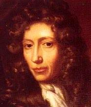
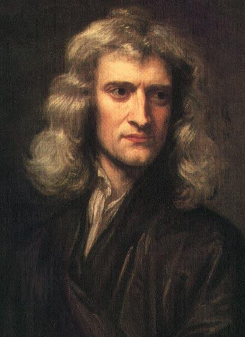

6) Bilimin Mekanikleşmesi
Doğa ve Doğa kanunları karanlıkta saklıdır.
Tanrı ‘Newton olsun!’ dedi ve her yer ışık oldu.
Alexander Pope
aha önce gördüğümüz gibi, temelleri Descartes tarafından atılan mekanik felsefe, 17. yüzyılın öndegelen bilimadamlarınca paylaşılan bir doğa felsefesi haline geldi. Mekanik felsefeciler temelde doğayı büyük bir makine ya da Robert Boyle’nin öne sürdüğü gibi belirlenmiş kurallara göre işleyen büyük bir saat olarak ele aldılar. ‘Doğa kanunları’ kavramı doğanın ‘Tanrısal bir kural koyucuyu’ gerektirdiği için mekanik felsefe bazılarınca bir Hristiyan doğa felsefesi olarak da nitelendirilebilirdi.
A. Robert Boyle (1627-1691): Hristiyan Mekanizmi’nin bir Savunucusu
Robert Boyle adanmış bir Hristiyan ve aynı zamanda da önde gelen bir bilimadamıydı. Descartes gibi o da, Aristotelianizmin mekanik felsefe ile değiştirilmesi gerektiğini düşündü. Fakat Boyle, Descartes’in mekanik felsefesini benimsediği ölçüde, onun son nedenleri gözardı etmesini de eleştirdi. Boyle, Tanrı’nın tasarımını ve yaratılış için amacını anlamadaki başarısızlığı nedeniyle O’nun bilgeliği ve iyiliğinin pekçok kanıtını yitirdiğine inandı. Boyle’ye göre Descartes ‘Neden’ sorusunu sormayı reddederek, Tanrı’nın bizim için yaptığı herşeye karşı nankör olma riskine girmişti. Boyle, Tanrı insanları doğa tasarımında bilgelik ve iyilik aramaya davet ettiğini öne sürdü. Böylece Boyle dini nedenler için daha fazla deneysel araştırma yapmaya teşvik almış oldu.
‘Neden’ ya da ‘Ne amaçla’ sorularını sormada ısrarcı olması nedeniyle, Boyle’nin vücudun farklı bölümlerini incelemesi, optik, kimya, mekanik alanlarındaki çalışma-ları, ve hayvanların çevrelerine nasıl uyum sağladıkları konusundaki araştırmaları Descartes’in soyut varsayımlarından çok daha etkiliydi. Makinaların belirli amaçlar için yapılmaları gibi (örneğin saatin zamanı göstermesi), bedendeki uzuvlar da farklı işlevler için yaratılmışlardır (gözler görmek için yapılmıştır). Bu şekilde doğa Tanrı’nın bilgeliğini ve hünerini kanıtlar. Doğadaki her bir nesne tasarlanmış olduğunu kanıtlamasa da, tamamen herşey insanın yararı için yaratılmasa da ve insanın, Tanrı’nın tasarımının derinliğini ve doğadaki amaçlarını tam anlamıyla anlayamamasına rağmen, Boyle gibi Hristiyan mekanikçilerine göre, doğada belli bir tasarımın olması tartışılmaz bir şeydir. Onların bu muhakemeyi yürütmesi daha sonra değineceğimiz doğal tanrıbilimin temeli haline gelmiştir.
Boyle mekanik felsefeyi, Spinoza’nın Tanrı ve O’nun yarattıkları arasındaki panteistik düzensizliğe yanıt olarak gördü. Boyle insanın doğanın benzeyişinde değil, Tanrı’nın benzeyişinde yaratıldığını anlatan Kutsal Kitap’ın bakış açısını ele aldı. Ona göre, herkesten çok bilim adamları Yaratıcı’nın mükemmel tasarımını ve akıl almaz ustalığını takdir edebilirdi. Dahası, insan aklının ruhsal bir boyutu vardı–öyleyse tamamen ruhsal bir varlık (yani Tanrı) doğadaki sürece müdahale edebilir. Tanrı kendi müdahalesini Mesih ve öğrencileri tarafından gerçekleştirilen mucizeler aracılığıyla belli etmiştir.
Boyle ve diğer Hristiyanlar’ın bütün çabalarına rağmen mekanik felsefe ve Hristiyanlık arasındaki ilişki pek de kolay yürümedi. Bu, mekanik felsefenin Tanrı’nın sağlayış öğretisini etkilemesinden kaynaklanıyordu: bir saat gibi işleyen evrende Tanrı’ya ne gerek vardı? Doğadaki bütün değişim iki kütlenin madde ve hareket yasaları uyarınca hareket etmelerinin sonucuysa ve maddenin de bir ruhu yoksa, elimizde kalan tek şey materyalist felsefe olmaz mıydı? Her şeyin mekanik olarak belirlendiği bir dünyada nasıl hareket özgürlüğü ve kendiliğinden olmayı açıklayabilirsiniz? İnsan bir makinadan daha fazlası değil miydi?
Mekanik felsefe ve Hristiyanlık arasındaki sentez adanmış Hristiyanlar için önem taşıyordu fakat şüpheci kesimler üzerinde bıraktığı etki oldukça azdı. Mekanistik felsefeden Thomas Hobbes’in maddeciliğine ya da Voltaire’in deizmine doğru giden yol sadece ufak bir adımdı. Muhteşem tasarımcı bir kez doğanın saatini çalıştırdıysa, niçin hâlâ kendisi onun işleyişine müdahale etmek zorundaydı? Bu, Tanrı’nın öngörüsünün mükemmel olmadığı anlamına gelen, özgün tasarımın hatalı olduğunu göstermez miydi? Boyle’nin doğayı tasarıma göre işleyen bir saate benzettiği bu resim, günümüzde izlerini aşırı-Calvinizm’de görebileceğimiz uzak ve sınırlandırılmış bir Tanrı kavramının ortaya çıkmasına neden oldu. Bu, Hristiyan mekanikçilerinin hiçbir zaman tam anlamıyla çözemedikleri bir ikilemdi; Tanrı’nın mucizevi yollarla yaratmış olduğu kurulu düzene müdahale etmekte özgür olduğu konusunda ısrarcı olsalar da, böyle yapması O’nun öngörüsünü zayıflatırdı–fakat müdahale edememesi de Tanrı’nın özgürlüğünü kısıtlardı!
Newton’un Sentezi
İsaac Newton (1642-1727) şüphesiz tüm zamanların en büyük bilim dehalarından biriydi. Bilim tarihinde en önemli eserlerden biri olan İlkeler (“Principia”) (1687) adlı eseri evrenin işleyiş ilkelerini ortaya koydu, ya da başka bir deyişle, Tanrı’nın yaratılış için koyduğu yasaları açıkladı.
Bilimsel sentez, olgunun bütün dizgesini açıklayan tekil bir kavramdır. En basit haliyle Newton’un bu önemli sentezi yerçekimi yasasını ve hareket yasalarını, kendisinden önce gelenlerin fikirlerini tek, tutarlı bir sisteme dönüştürmesinden oluşuyordu. Öncellerine olan borcunun farkında olarak, eğer diğerlerinden daha uzağını görebiliyorsa, bunun yalnızca ‘devlerin omuzları üzerinde durmasından’ kaynaklandığını söyledi: Kopernikus kendi evren anlayışını şekillendirmiş, Galileo kinetiğin temellerini atmış ve Descartes de kendi felsefi kavramlarını (teolojik değil) oluşturmuştu. Kepler’in gezegenlerin hareket yasası ve Boreli’nin güneş ve gezegenler arasında merkezcil bir çekim olabileceği varsayımı (Hooke bunun aradaki uzaklığın karesiyle ters orantılı olduğunu öne sürdü). Mekanik felsefeciler ve bilim adamları Newton’un yerçekimi ve hareket yasalarının evrensel bir doğruluğu olduğu sonucuna varmasına neden olurlarken, Bacon’un deneysel araştırması da modern bilimsel yöntemin temellerini attı.
Newton’un ‘uzaklığın karesiyle orantılı olarak azalan evrensel yerçekimi’ yasası, bir elmanın yere düşmesinden, gelgitin ve gökyüzü cisimlerinin hareketine kadar bütün doğal olayları kapsıyordu. Bu nedenle Aristoteles’in yeryüzüne ve gökyüzüne ait bölgelerle ilgili ikiliğini sonunda ortadan kaldırmış oldu. Evren, tek bir kural bütünlüğüyle yönetilen kozmik bir bütündü. Dahası, sonraki bilimsel gelişmeleri oldukça fazla etkileyen Newton’un hareket yasaları, gök cisimlerinin daireler çizerek hareket ettiklerini öne süren Aristoteles’in fikirleriyle de çelişiyordu. Newton, herhangi bir şey müdahale etmediğinde düz çizgiler halinde hareket ettiklerini öne sürdü. Aristoteles cisimlerin sabit bir hızla hareket etmelerini sağlamak için sabit bir gücün gerekli olduğu iddia etti. Newton ise hareket eden bir cisme herhangi bir şeyin müdahalesi olmadığında böyle bir gücün gerekmediğini savundu. Ya da başka bir deyişle, sabit bir güç sürekli ivme kazandırır. Gezegenlerin hareketini onları düz bir çizgide taşıyan eylemsiz hareketlerinin ve kıvrılmalarını sağlayan güneşin çekiminin birleşmiş etkisiyle bağlantılı olarak açıkladı.
Decartes’in mekanik felsefesinden etkilenmesine rağmen Newton evrenin hareket halindeki bir maddeden çok daha fazlası olduğu konusunda ısrar etti. Robert Boyle gibi o da evrenin Tanrı tarafından tasarlanıp yaratıldığına ve bunun Tanrı’nın yaratıcı zekâsının ve matematik yeteneğinin mükemmel bir ispatı olduğuna inandı: gezegenler iki gücün etkileşmesiyle ileriye doğru itilebilirler, doğru bir hızda hareket etmeleri ve güneşten doğru bir uzaklıkta bulunmaları bunun böyle olmasını Tanrı’nın tasarladığının kanıtıdır.
Newton Tanrı’nın doğal dünyayı doğrudan etkilediğine inandı–insanın vücudunun öğelerini isteyerek hareket ettirmesi gibi, her yerde var olan Tanrı da kendi iyi isteği uyarınca evrenin öğelerini hareket ettirebilirdi. Gerçekte, onun sarsılmaz Tanrı inancı kendisinin yerçekiminin tam olarak ne olduğunu çözmeden yerçekimi teorisini oluşturmasını sağladı.
Newton’un sentezi Tanrı ve ruhsal dünya için açık bir kapı bırakmıştı, bu nedenle tanrıcı yorumlar, Descartes’in –hatta Boyle’ninkinden bile– mekanik felsefelerinden daha fazla tercih ediliyordu. Newton’un felsefesinin en çok popüler olduğu İngiltere’de bu felsefe gününün Hristiyan inancı savunmacılarını iyi ve zeki bir Tanrı’nın varlığını kanıtlamak için teşvik etti.
Fakat Avrupa anakarasında Voltaire gibi düşünürler bilim ve Tanrı’nın doğada var olduğunu öne süren Hristiyan inancı arasında yakın bir ilişki olduğunu reddettiler. Newton’u ‘eksik bir Tanrı’ya, bu ‘eksiklikleri’ bilim zamanla bilgi ile doldurdukça giderek daha da az ihtiyaç duyulacak olan bir Tanrı’ya tapınmakla suçladılar. Leibniz bile Newton’un Tanrı’sını, ikinci sınıf bir saat tamircisiyle kıyasladı: bu tamirci sık aralıklarla evreni iyice temizlemek ve onu yeniden kurmak zorundaydı! Dahası Newton’un Tanrı’yı insanın bedeninin uzuvlarını hareket ettirmesi gibi yaratılışı harekete geçiren birine benzetmesi panteizme (tüm evrenin Tanrı ya da Tanrı’nın bir parçası olduğu görüşü) kapı açmış oldu: yaratılış Tanrı’nın bedeni miydi?
Fakat bu, Newton’un inancının gülünç bir taklidiydi. O’nun Tanrı’sı ‘eksik bir Tanrı’dan ve evrenin kendisinden çok daha fazlasıydı. Newton’un evreni, mekanik bilimcinin sadece bir kapalı kutusu da değildi; mekanik olmayan bir nedenselliğin ortaya çıkması için de açık bir kapı bırakıyordu, böylelikle Tanrı ve ruhsal varlıklar için de yer açmış oluyordu. Tanrı olgusuna tam olarak açıklayamadığı bir şey olarak bakıyordu çünkü tamamen her şeyin kökenlerinin Tanrı’da olduğunu savunuyordu.
Fakat, 1730’larda bütün doğa olaylarının mekanik nedenlerin sonucu olduğunu öne süren kıtasal düşünürlerin görüşü Avrupa entellektüel sahnesinde en ön sırayı aldı. Doğa olgusunu açıklamak için Tanrı’nın yardımına olan gereksinim deneysel bilimsel bilginin evrenin sırlarını ortaya çıkarmak için ileriye attığı adımlarla aynı orantıda azaldı.
Robert Boyle ve Newton’un da yapmaya çalıştığı gibi evreni yaratan ve destekleyen kişisel bir Tanrı ile bilim arasındaki uyum sağlanabilse bile, bu, Kutsal Kitap’ın yetkisi ve Kilise’nin öğretisine dair ciddi sorunların ortaya çıkmasına neden oldu. Tanrıbilimle sınanmayabilirdi fakat geleneksel inanç ve kilise yapıları sınanabilirdi. Ruhla dolu oldukları varsayılan Kilise Babaları’nın bilimle ilgili görüşlerinin yanlış olduğu anlaşılırsa, diğer konularda onlara nasıl güvenilebilirdi?
Düşünün!